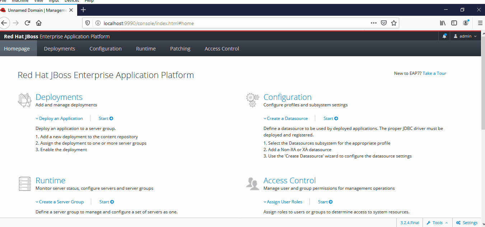
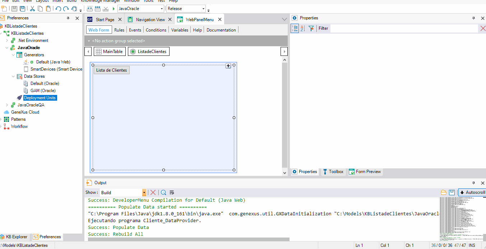
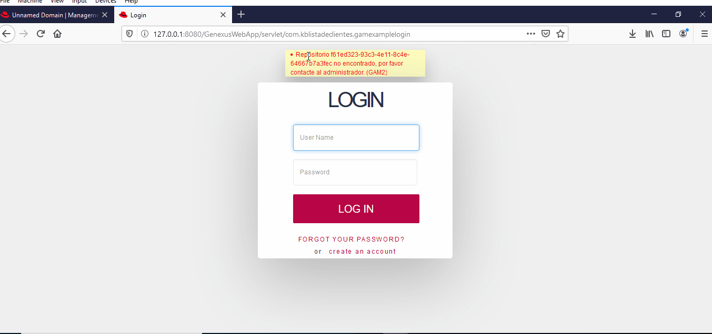
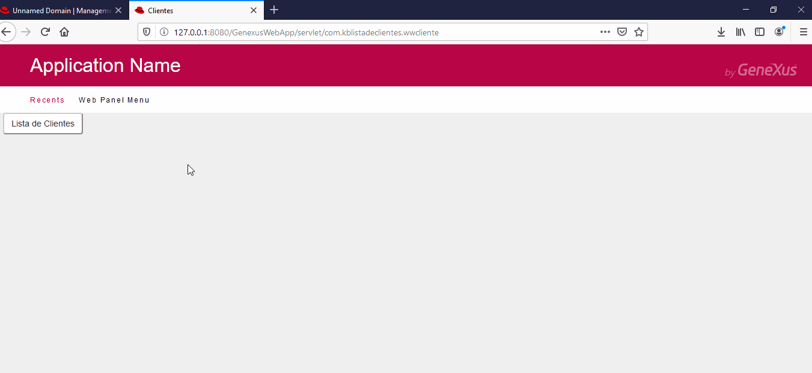

Deploying a Java application on a JBoss server
This example focuses on a particular case, deploying a Java application to a test environment using a JBoss application server, accessing the Oracle Database via JNDI and using the GeneXus Access Manager. Step 1: Creating the Data Source For this step, you need to use the Database Driver, which can be found at <GeneXus_Installation>\gxjava\drivers\ojdbc*.jar The driver is deployed in the application server, and you can check that it is listed in the configuration. The creation of a new data source must use the driver, as well as contain the connection data to the Oracle instance; the process is completed with a successful connection test. The name assigned to the Data Source is configured in the KB, in the Data Store properties. java:/OracleDS Use Data Source for Web Based Applications Both the default data store and the GAM data store use the same data source in the example. Step 2: Packaging GenerationThe WAR packaging is generated using the Application Deployment Tool.  To do so, set the property Use Application Server Data Source to True. Reorganization of the GAM database can be done from within GeneXus or using the GAM Deploy Tool in standalone or command line mode. Read the documentation Step 3: Deployment and Packaging Configuration (WAR)The application is deployed in the test environment.
In this step, errors may occur due to the specific configuration of the environment, which should be solved by modifying mainly web.xml or jboss-deployment-structure.xml configuration files.
GenexusWebApp.war could not be deployed.Details {"WFLYDC0074: Operation failed or undone on all servers. Server failures: " => {"server-group" => {"main-server-group" => {"host" => {"master" => { "server-one" => {"WFLYCTL0080: Servicios fallidos" => {"jboss.deployment.unit.\"GenexusWebApp.war\".undertow-deployment.UndertowDeploymentInfoService" => "java.lang.ClassNotFoundException: genexus.security.api.aGAMSSORestRequestTokenAndUserInfo_v20 from [Module \"deployment.GenexusWebApp.war\" from Service Module Loader] Caused by: java.lang.ClassNotFoundException: genexus.security.api.aGAMSSORestRequestTokenAndUserInfo_v20 from [Module \"deployment.GenexusWebApp.war\" from Service Module Loader]"}}, "server-two" => {"WFLYCTL0080: Service failures" => {"jboss.deployment.unit.\"GenexusWebApp.war\".undertow-deployment.UndertowDeploymentInfoService" => "java.lang.ClassNotFoundException: genexus.security.api.aGAMSSORestRequestTokenAndUserInfo_v20 from [Module \"deployment.GenexusWebApp.war\" from Service Module Loader] Caused by: java.lang.ClassNotFoundException: genexus.security.api.aGAMSSORestRequestTokenAndUserInfo_v20 from [Module \"deployment.GenexusWebApp.war\" from Service Module Loader]"}} }}}}}}
The Solution to this error is a dependency defined in the web.xml file that is not necessary, so it is enough to delete or rename it using lowercase. Also added to the web.xml file are the tags needed to disable JBoss' RESTeasy service module as described in the article Deployment of Java Applications Step 4: Connection property may be neededIn the particular case of some DBMS such as Oracle or SQL Server, the Data Source property must be configured. fixed string = True  This can also be done by editing the file domain.xml/standalone.xml, as indicated in SAC #21246 Step 5: Application testing In this step, a test is performed by querying the application data and successfully changing it. Software versions used:
Note: To deploy the application in a distributed environment (cluster), take into account the information of SAC #47815 |